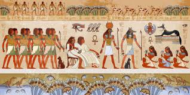

Catégorie : Afrique



L'Égypte est un pont entre l'Afrique du Nord-Est et le Moyen-Orient et son histoire remonte à l'époque des pharaons. Des monuments millénaires bordent les berges de la fertile vallée du Nil, notamment le sphinx et les pyramides colossales de Gizeh. La ville de Louxor abrite le temple de Karnak et ses hiéroglyphes, ainsi que les tombeaux de la vallée des rois. Le Caire, la capitale, regorge de sites ottomans, comme la mosquée Mohammed Ali ou le musée égyptien et ses trésors d'antiquités.
Catégorie : Amérique
Catégorie : Europe
Catégorie : France